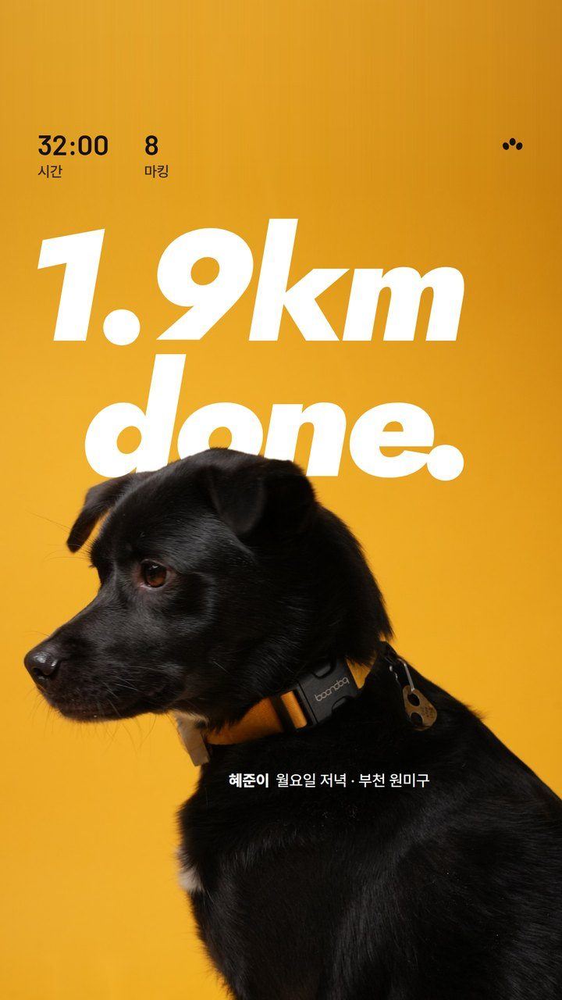
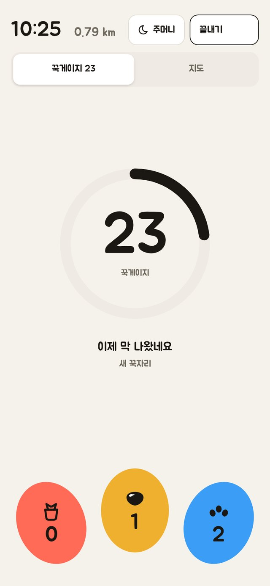
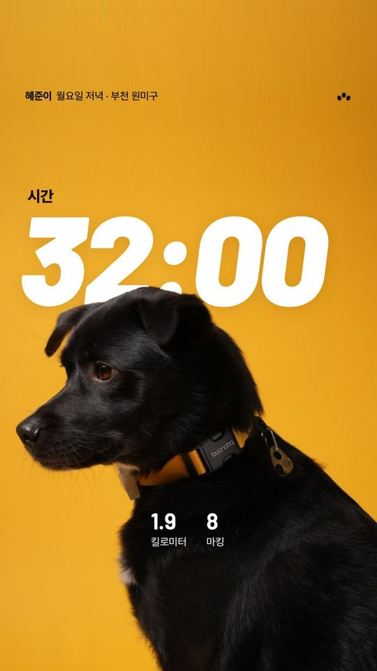
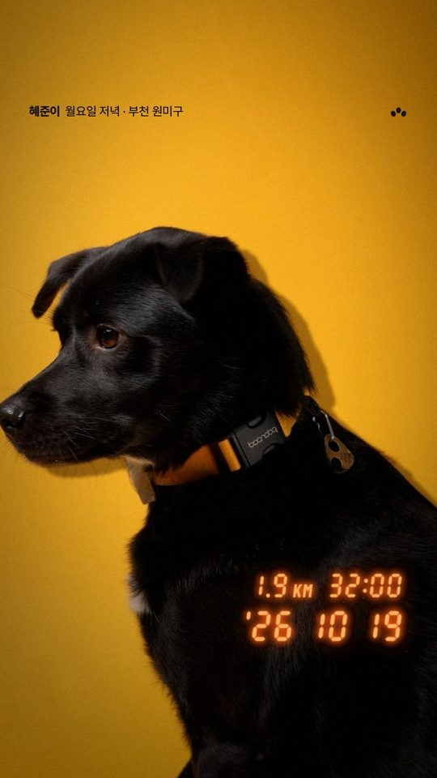
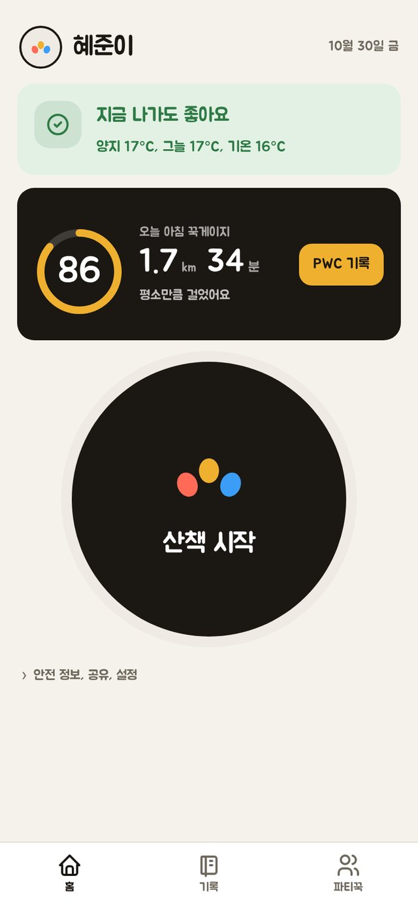
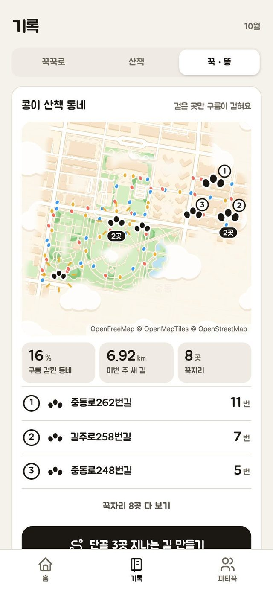
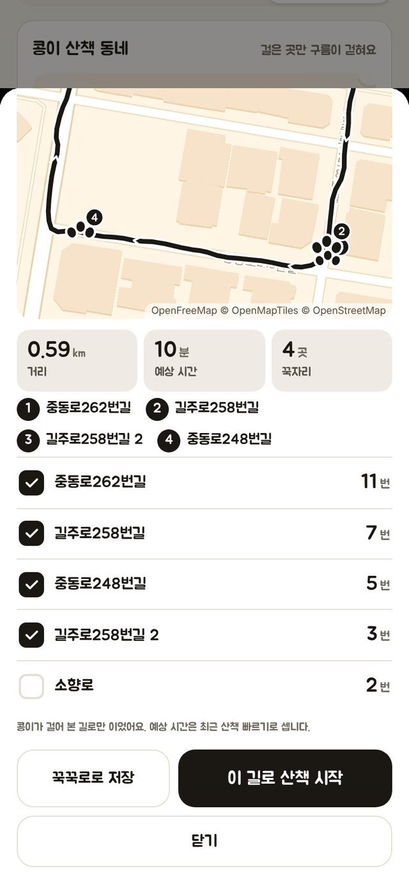

평소의 우리 강아지와 비교합니다
걸은 시간, 냄새 맡은 시간, 오줌과 똥을 모아 최근 14번의 산책과 견줍니다. 남의 강아지와 줄 세우지 않습니다.
처음 다섯 번은 체중과 나이로 정한 임시 기준을 쓰고 그다음부터는 그 강아지의 기록이 기준이 됩니다.
꾹꾹이는 우리 강아지의 최근 산책을 기준으로 오늘이 평소만큼이었는지 알려 주는 무료 산책 앱입니다.
무료, 가입 없음, 기록은 내 폰에만 저장됩니다.


산책이 끝나면
보호자의 감 대신 그 강아지의 평소 기록으로 봅니다. 손은 목줄을 잡고 있으니 기록은 한 번 누르면 끝납니다.
걸은 시간, 냄새 맡은 시간, 오줌과 똥을 모아 최근 14번의 산책과 견줍니다. 남의 강아지와 줄 세우지 않습니다.
처음 다섯 번은 체중과 나이로 정한 임시 기준을 쓰고 그다음부터는 그 강아지의 기록이 기준이 됩니다.
산책이 끝나면 러닝 인증샷처럼 거리, 시간, 마킹만 담긴 카드를 만듭니다. 숫자는 고칠 수 없고 사진만 바꿀 수 있습니다.
인스타 스토리에 바로 올리거나 사진 없이 숫자만 저장해도 됩니다.



나가기 전에 바닥 온도를 추정해 위험한 시간이면 먼저 알려 주고 그날 목표를 낮춥니다.
서울에서 잰 연구로 맞춘 추정값이라 그늘과 바닥 재질에 따라 실제와 다를 수 있습니다.
새로 나온 기능
자주 가는 꾹자리와 처음 걸은 길이 지도에 남습니다. 단골 꾹자리를 이어 오늘 걸을 길도 골라 줍니다.


약속
꾹게이지와 기록 카드에도 광고와 판매를 넣지 않습니다.
가입이 없고 걸은 길과 꾹자리는 폰 밖으로 나가지 않습니다. 날씨와 동네 이름을 받을 때만 대략적인 위치를 보냅니다.
꾹게이지와 바닥 온도 안내, 기록 카드는 앞으로도 무료로 둡니다.
쉰 날은 쉰 날로 기록만 남깁니다.
베타 테스터 모집
안드로이드는 앱으로, 아이폰은 설치 없이 웹으로 바로 써 볼 수 있습니다. 써 보고 불편한 점을 알려 주시면 그대로 고칩니다.
폰 카메라로 찍으면 받기 페이지가 열려요
네. 지금 있는 기능은 모두 무료입니다. 나중에 2주 요약 리포트 같은 유료 기능이 생겨도 꾹게이지와 바닥 온도 안내는 무료로 둡니다.
아니요. 강아지 이름과 체중만 적으면 바로 시작합니다. 기록은 폰에 저장되고 기록 내보내기로 다른 폰에 옮길 수 있습니다.
준비 중입니다. 그 전까지는 사파리에서 웹으로 쓰고 산책 중엔 주머니 모드로 화면을 켜 둡니다. 아이폰 웹은 화면이 꺼지면 위치가 끊기기 때문입니다.
됩니다. 남과 비교하지 않고 그 강아지의 평소 기록과 비교해서 노령견도 소형견도 자기 기준으로 봅니다.
앱 기록 탭 맨 아래 '베타 기록 보내기'를 누르면 보낼 글이 만들어집니다. 위치와 경로는 들어가지 않습니다.